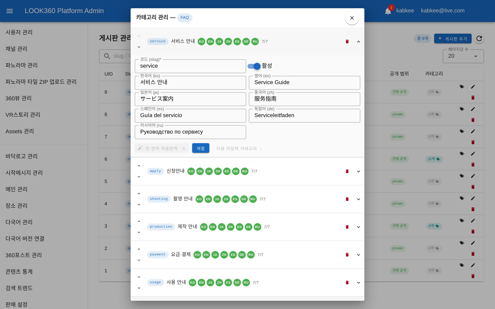
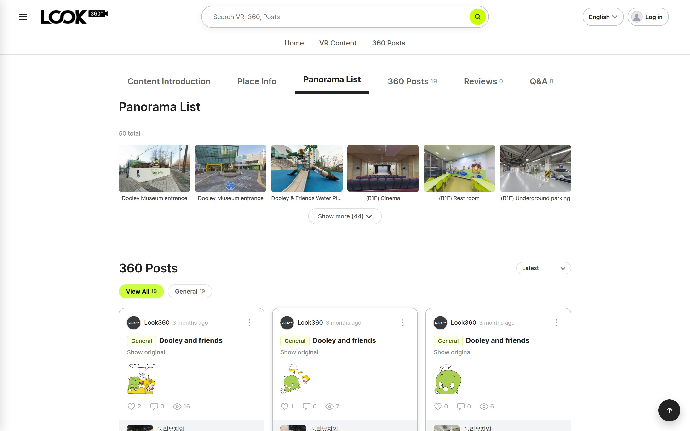
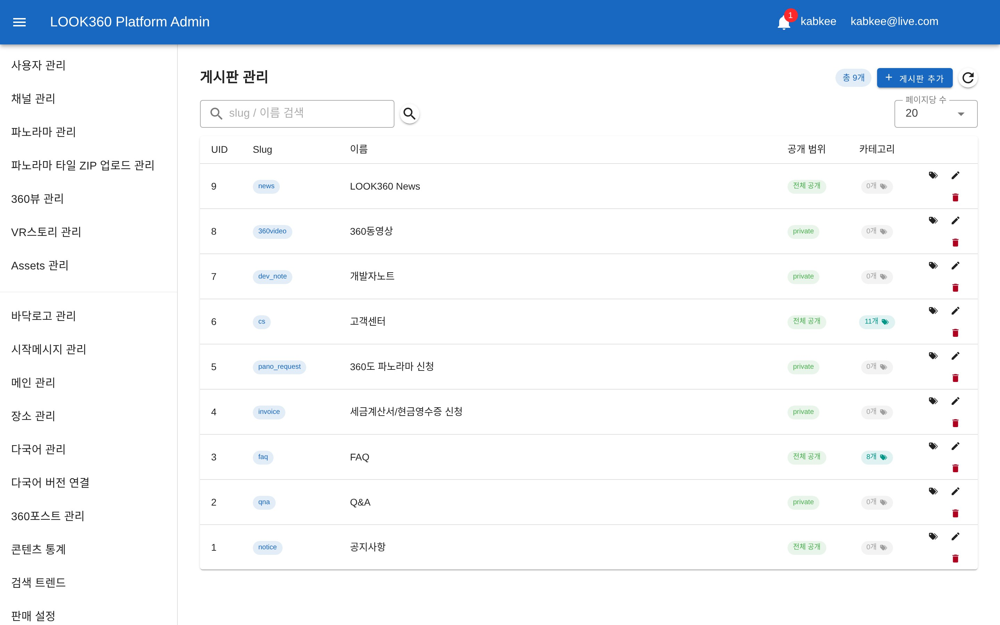
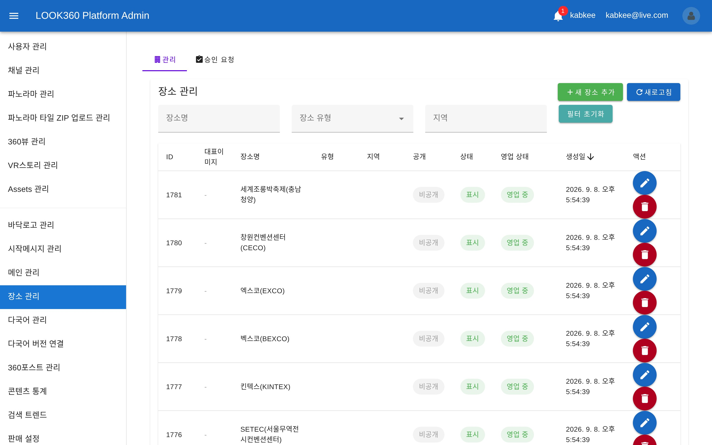
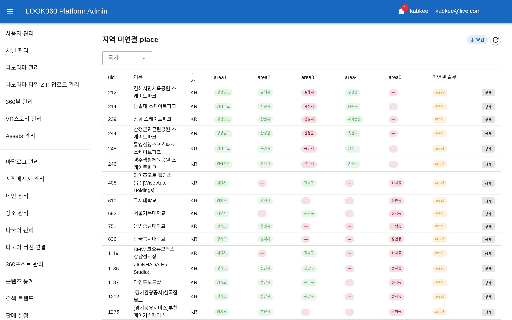
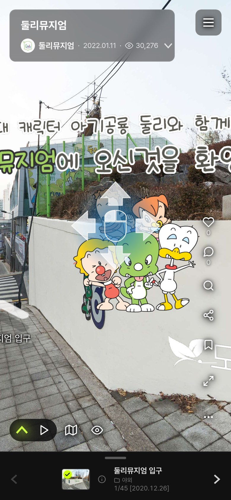
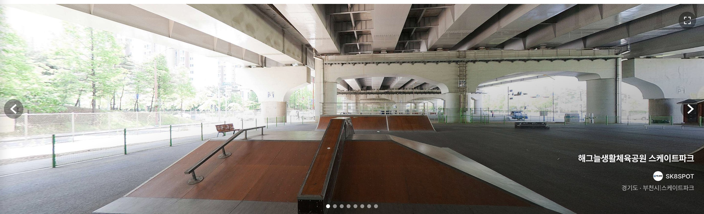
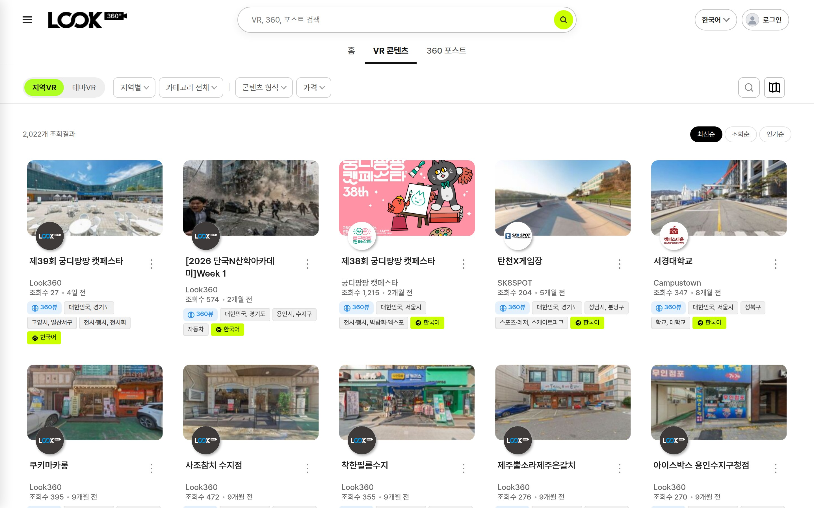

Indyspot AI Corp · Engineering Manager · 2026-09-09
Section 01
작업 중 우연히 발견된 결함 하나가, 같은 성격의 문제 40곳을 찾아내는 전수 점검으로 이어졌습니다.
테스트 장소를 지우려다 오류 원인을 파고든 것이 출발점이었습니다. 로그인 정보를 전혀 붙이지 않은 요청이 거부되지 않고 데이터베이스 삭제 명령까지 도달하고 있었습니다.
판정 기준은 실제 호출 결과입니다. 정상이라면 「권한 없음(401)」이 돌아와야 하는데, 문제 지점들은 「없는 데이터(404)」·「잘못된 요청(400)」을 돌려주었습니다. 요청이 이미 인증 관문을 통과해 내부 로직까지 들어갔다는 뜻입니다.
31곳을 차단하고, 9곳은 공개되어 있는 것이 정상임을 확인해 그대로 두었습니다. 무조건 잠그는 대신 경로마다 성격을 판정했습니다.
가장 위험도가 높았던 건입니다. 페이스북·네이버 간편 로그인에서 해당 회사에 「이 사람이 맞느냐」고 확인하는 절차가 통째로 빠져 있었습니다.
실제 피해 흔적은 확인되지 않았습니다. 다만 가능한 상태였다는 점에서 이번 주 최우선으로 처리했습니다.
Section 02
지난주 「데이터를 채우는」 단계였다면, 이번 주는 그 데이터가 실제 화면에 나오게 하는 단계였습니다.
대상은 한국어 · 영어 · 일본어 · 중국어 · 스페인어 · 독일어 · 러시아어 7종입니다.
기계 번역으로 무작정 채우지 않고 검수된 번역만 반영하는 원칙은 유지하고 있습니다.
7개 언어가 한 줄에 펼쳐져 읽히지 않던 화면을 요약 행 + 펼침 편집으로 다시 만들었습니다.

「번역이 사람 모르게 자동으로 저장되는 것은 금지, 버튼을 눌러 초안을 받아 확인 후 저장하는 것은 허용」이라는 오너 결정을 그대로 구현했습니다.
사이트 언어를 영어로 두고 자동 번역을 켜도 파노라마 이름만 한국어로 남았습니다. 아래는 수정 후 화면입니다.

Dooley Museum entrance
둘리뮤지엄 입구
데이터를 새로 만드는 작업이 아니라 읽어오는 연결을 잇는 수정이었습니다. 같은 유형으로 VR 뷰어에서 자동 번역을 켰을 때 분류·지역·테마 표시까지 함께 번역되도록 하는 작업(오너 신규 요구)도 이번 주에 반영했습니다. 뷰어 밖 화면은 기존대로 사이트 언어를 따릅니다.
Section 03
「화면은 있는데 실제로는 쓸 수 없던」 기능 4건을 정상화했습니다.
목록에 10건만 표시되고 다음 장으로 넘어갈 방법이 없었습니다. 그런데 그 10건은 전부 테스트용 게시판이라, 공지사항·FAQ·고객센터 같은 실사용 게시판 9건은 관리자가 단 한 건도 열 수 없었습니다.

위 화면의 「총 9개」가 정리 결과입니다. 공지사항·Q&A·FAQ·세금계산서 신청·파노라마 신청·고객센터·개발자노트·360동영상·뉴스 9건이 모두 조회·수정 가능합니다.
「장소 유형」 필터가 이제 실제 분류 기준(32종)으로 동작하고, 수정 저장도 정상 처리됩니다.

지역 필터가 비어 보이던 근본 원인은 장소에 지역 정보가 연결되지 않은 것이었습니다. 이제 그 대상을 화면에서 직접 확인하고 고칠 수 있습니다.

기존에는 잘못된 데이터를 사람이 찾아 지우는 방식이었습니다. 그러면 지워도 같은 데이터가 계속 새로 쌓입니다.
위 화면은 색으로 상태를 구분합니다 — 정상 / 규약 위반 / 비어 있는 자리. 현재 36건이 남아 있고, 신규 유입 경로는 이번 주 봉합했습니다. 기존 데이터 정리는 진행 중입니다(Section 06).
Section 04
실기기에서 오너가 직접 발견한 문제들을 그대로 반영했습니다.
작성 진입 버튼과 하단 정보창의 배치를 정리하고, 창 높이가 화면 변화를 따라오도록 했습니다.

「일단 눌러 보게 하고, 필요하면 그때 로그인시킨다」는 방향입니다. 로그인 직후 조용히 막히던 문제도 함께 해소했습니다.
Section 05
「체감상 너무 느리다」는 현장 의견을, 실제 서버에서 측정해 원인을 확정했습니다.
파노라마 압축파일을 올리면 5분 넘게 화면이 멈춰 있었습니다. 「저장소가 느린 것 아니냐」는 가설이 있었지만, 운영 서버에서 직접 측정한 결과 원인은 저장소가 아니었습니다.
압축을 푸는 것 자체는 0.5초면 끝납니다. 느렸던 건 파일을 한 개씩 차례로 옮기고 있었기 때문이고, 저장소 성능의 0.15%밖에 쓰지 못하고 있었습니다.
→ 사용자는 5분 내내 대기
→ 사용자 대기 약 4초
관리자 화면에는 반영 진행 상태 표시와 실패 시 알림을 함께 넣어, 「응답은 빨리 왔는데 실제로 됐는지 모르는」 상태가 생기지 않게 했습니다. 실제 총 처리 시간도 3.3배 단축됩니다.
데이터 이관 작업 대기열에 쌓여 있던 13건의 처리 상태 불일치도 이번 주에 점검·정리했습니다.
Section 06
첫 화면과 목록 화면의 잔여 항목들을 정리했습니다.
좌우 여백을 없애 화면 전체를 쓰도록 바꾸고, 우측 정보를 제목 / 채널 / 지역·분류 3줄로 재구성했습니다.

결과가 없는 필터 항목을 흐리게 두는 대신 아예 감추도록 바꾸고, 가격을 거꾸로 입력하면 자동으로 바로잡습니다.

검색 자동완성에서는 종류별로 색을 구분하고, 검색어와 일치하는 위치가 앞쪽인 결과를 먼저 보이도록 순서를 다시 정했습니다.
Section 07
완료되지 않았지만 이번 주에 계속 진행된 작업들입니다.
전국 주소를 광역 → 시 → 구·군 → 읍·면 → 동·리 5단계로 통일하는 작업입니다. 지역 필터·검색·다국어 표기가 모두 이 체계를 기준으로 동작합니다.
순서를 지켜야 하는 작업입니다. 앞 단계를 건너뛰면 오류 대상이 오히려 늘어나는 것을 실제로 확인해(148건 → 489건), 현재는 단계별로 확인하며 진행하고 있습니다.
아래는 오너 착수 지시를 기다리는 대기 항목입니다 — 실제 카드 결제 오픈 준비 · 미관람 30일 소멸 정책 · 구독 알림 추가 후보 9종.
지난주 안건 6건이 모두 처리 완료되어, 현재 응답 대기 중인 승인 카드는 없습니다.
지난주 처리 완료 — 추천VR 홈 반영 · 감상기록 정리 · 러시아어 지역명 방침 · 홈 슬라이드 잔여 파일 · 영구소장 데이터 · 지역 필터 연동 범위 6건 전부 종결됐습니다.
서비스 지표(9/2~9/8): 주간 방문자 2,697명(+5.6%) · 세션 2,995건(+6.7%) · 페이지뷰 14,488회(+31.5%) · 문의 폼 완료율 84.9%
열려 있던 뒷문 31곳을 닫고, 7개 언어를 데이터에서 화면까지 내보내고, 5분을 기다리던 업로드를 4초로 줄인 주간이었습니다.